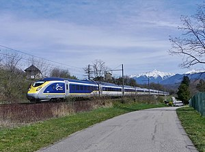

TrainDex Database
TrainDex Database
| # | Train Name | Company | Image(click to enlarge) | Build Date | Upload Date | Notes |
| 1 | Avelia Liberty | Alstom | 2017-Present | 2/7/2024 | Replacement for the Acela Express Trainsets running between Boston and Washington DC, with a top speed of 160 mph in service, and 220mph top speed. The release of these trainsets were plagued with many issues, leading to their delay in entering service, from 2022 to present. | |
| 2 | Acela Express (gen 1) | Bombardier, Alstom | 1998-2001 | 2/7/2024 | First high speed trains to enter revenue service in the united states, entered revenue service in 2000. 165mph top speed amd 150mph max service speed. These trainsets are likely to be retired soon or repurposed following the release of the Avelia Liberty trains. | |
| 3 | Charger | Siemens Mobility |  |
2016-Present | 2/7/2024 | Built in 2016 and gradually entering service since then, the Siemens Chargers were built to replace the GE Genesis trains running on much of the network. These trains have a higher top speed of 125 mph, and are capable of diesel, or electric, or hybrid modes, and have been implemented in many of the routes that were previously served by GE Genesis locomotives. |
| 4 | GE Genesis | GE Transportation Systems | 1992-2001 | 2/7/2024 | Released and entering revenue service in the 1990s and 2000s, 321 GE Genesis trains were produced for service across the entire country, as well as for use by Via Rail and Metro North. These trains operate with a top speed of 110mph, and run on diesel fuel. | |
| 5 | Eurostar e320 | Siemens |  | 2011-2018 | 2/7/2024 | Entering service in 2015, the e320s have been running consistent service along the british hs1 corridor and channel tunnel, connecting London with Paris, Brussels, Amsterdam, and several other destinations across Europe. With a top operating speed of 200mph, these are among the first high-speed rail trains to enter service in the UK |
| 5 | British Rail Class 801 | Hitachi Rail | 2017-2020 | 2/8/2024 | Entering service in 2019, these cars run from London King's Criss to Aberdeen, with a top speed of 125 mph on the route. These trains operate under the London North Eastern Railway, with Azuma branding and livery | |
| 5 | Renfe Class 103 | Siemens | 2001-2006 | 2/8/2024 | Entering service in 2007, these trains have been used in service between Madrid and Barcelona, as well as between Madrid and Málaga. These trains are commissioned with a top speed of 217mph, but only reach 193mph in service |